ADY1104 Visualización de Datos · Duoc UC · Evaluación Parcial EP5
Revisión crítica y optimización de la solución de visualización del catálogo: de métricas descriptivas a KPIs con meta que orientan decisiones de adquisición, promoción e inversión.
Dashboard optimizado3 KPIs con meta43 mejoras documentadas
| Equipo consultor | Felipe Ahumada Silva · Francisca Carrasco Lozano |
|---|---|
| Cliente | StreamView Analytics: Directorio, Gerencia General y gerencias de Contenidos y Adquisición, Marketing y Producto, y el equipo Data & Analytics |
| Versión evaluada | EP4 (commit 221f72f) → EP5 optimizada |
| Fecha | Noviembre de 2026 |
| Repositorio | github.com/francarrascoo/StreamView_Analytics |
Contenido: 1. Resumen ejecutivo · 2. Problema de negocio y audiencia · 3. Fuentes de datos y calidad · 4. KPIs · 5. Hallazgos centrales · 6. Revisión crítica de la versión inicial · 7. Justificación de las representaciones · 8. Diagnóstico de legibilidad, accesibilidad y jerarquía · 9. Mejoras implementadas (antes/después) · 10. Limitaciones pendientes · 11. Conclusiones, recomendaciones e impacto esperado · Anexo: reproducibilidad.
Qué se pidió. StreamView Analytics necesita decidir qué contenido adquirir, qué promover y dónde invertir, con información consistente entre áreas. En EP5 auditamos la solución de visualización entregada en EP4 y la optimizamos.
Principal debilidad corregida. La versión EP4 presentaba métricas como si fueran KPIs: cifras como "26% de películas bien evaluadas" o "Japón, mercado mejor evaluado" sin una meta contra la cual juzgarlas, sin plazo y sin responsable. Una cifra sin meta describe, pero no dice si hay que actuar. Definimos 3 KPIs, uno por cada decisión central del caso (qué cine adquirir, de qué mercados y si el público participa con las series), cada uno con meta a diciembre de 2026, umbral de alerta, responsable y la decisión que gatilla. La rentabilidad y la calidad de los datos se muestran como evidencia que respalda esas decisiones, no como KPIs. Además, rediseñamos el tablero con los principios de Storytelling with Data: cada vista cabe en una pantalla, abre con una frase que dice la conclusión y responde cada pregunta con un solo gráfico, con las mismas escalas y colores en todas las pantallas. Finalmente lo revisamos con las Human Interface Guidelines de Apple: sigue el modo claro u oscuro del sistema, usa controles segmentados y describe cada gráfico en texto para lectores de pantalla.
StreamView Analytics es una plataforma de streaming por suscripción para Latinoamérica. Su catálogo creció, pero cada área usa reportes construidos con criterios distintos: hay múltiples versiones de un mismo indicador, las adquisiciones se deciden con información parcial y es difícil comparar países o identificar qué promover (problemas 1 a 7 del caso). La Gerencia General solicitó una solución de Visual Analytics que transforme el catálogo en decisiones.
La solución responde a cuatro audiencias. Cada una toma decisiones distintas, por eso tiene su propia vista en el dashboard:
| Audiencia | Decisión que toma | Vista del dashboard | KPIs |
|---|---|---|---|
| Directorio y Gerencia General (ejecutiva, poco tiempo) | Dónde invertir; si la estrategia de catálogo va bien | Directorio: Resumen, Avance hacia la meta, Catálogo, Rentabilidad | K1, K2 y K3 |
| Gerencia de Contenidos y Adquisición (analítica) | Qué mercados y géneros adquirir; qué licencias renovar | Contenidos y Adquisición: Mercados, Géneros, Directores y actores (nuevo en EP5) | K1, K2 |
| Gerencia de Marketing (y Producto) | Dónde pedir calificaciones; qué contenidos promover | Marketing: Participación, Qué promover, Segmentos | K3 |
| Equipo Data & Analytics (técnica) | Si las cifras son confiables antes de publicarlas | Data & Analytics: KPIs y calidad de datos, Catálogo, Popularidad y nota, Tendencia, Finanzas | K1, K2 y K3 + ficha |
El objetivo de negocio que ordena toda la solución: subir la calidad del catálogo y lograr que el público participe. Los tres KPIs se derivan de ese objetivo: cuánta calidad se adquiere (K1), de qué mercados viene (K2) y cuánto participa el público con las series (K3). La rentabilidad respalda a K1 y K2 como evidencia.
Sobre retención: el caso menciona retención, engagement y experiencia. Los datos entregados no contienen reproducciones, suscripciones ni usuarios, así que la retención no se puede medir. El engagement se aproxima con la participación del público en TMDB (K3), y así se rotula en el dashboard (ver limitaciones, sección 10).
Dos datasets oficiales del caso, sin modificar: Netflix Movies Detailed up to 2025 (16.000 películas, 18 variables)
y Netflix TV Shows Detailed up to 2025 (16.000 filas, 16 variables; 15.991 series únicas tras eliminar 9 duplicados
por show_id). Son metadatos de TMDB de estrenos 2010-2025 y se integran en una tabla de 31.991 títulos
con una columna de formato. La integración estandariza géneros (por ejemplo, "Action & Adventure" pasa a Acción y
Aventura), trata "Unknown" como faltante y unifica los dos códigos del chino mandarín (82 idiomas).
| Regla de calidad | Por qué | KPIs afectados |
|---|---|---|
| Calificación solo con 10 o más votos | 14% de los títulos no tiene votos y su calificación viene en 0, que no es una nota real | K1 (K3 mide justamente esta cobertura) |
| Comparar país, idioma y género dentro de un formato | Las series tienen el triple de popularidad típica (36,2 frente a 10,9): mezclarlas produce una paradoja de Simpson | Rankings de K1 por país y género |
| Finanzas solo con montos ≥ US$10.000 y retorno ≤ 50 veces | Hay presupuestos de US$1 o US$5. Quedan 3.468 películas (21,7%) | Evidencia de rentabilidad |
| Popularidad con mediana; categorías con ≥ 200 títulos; 2025 fuera de las tendencias | Valores extremos; rankings con pocos casos; menos del 10% de los títulos de 2025 tiene votos suficientes | Rankings, listas de Marketing y trayectorias |
La limpieza vive en un solo módulo (dashboard/streamview/datos.py) que usan el dashboard y el notebook, para que
no existan "múltiples versiones de un mismo indicador" (problema 1 del caso). La auditoría completa está en la Sección 2
del notebook.
Métrica es una medida que describe ("25,8% de las películas está bien evaluada"). KPI es una métrica elegida porque mide el avance hacia un objetivo de negocio y que se compara contra una meta, con plazo, responsable y una decisión asociada: "K1 = 25,8% frente a una meta de 30% a diciembre de 2026 → en riesgo → la Gerencia de Contenidos prioriza adquisiciones en géneros y mercados que superan el 30%".
Las cifras de catálogo que el caso lista como "KPIs" (total de títulos, países, idiomas, presupuesto total) se mantienen en el dashboard, pero rotuladas como métricas de contexto (sin meta): describen el catálogo, no miden un objetivo.
StreamView no entrega metas, así que son supuestos del caso definidos por el equipo. Para que no sean arbitrarias, cada meta cumple dos condiciones: (1) es mejor que la línea base actual, así que exige un cambio; y (2) ya la alcanzó alguna cohorte de estreno del mismo catálogo, o la tendencia reciente la está alcanzando, así que es realista. Plazo: diciembre de 2026 (proyecto Visual Analytics 2026). Medición trimestral sobre cada extracción del catálogo.
Regla de estado, igual para los tres: ✓ cumple si alcanza la meta; ! en riesgo si queda hasta 15% (relativo) bajo la meta; ✕ no cumple si queda más abajo. El estado se comunica con ícono, palabra y color.
| KPI | Fórmula | Base | Meta | Estado | Responsable | Por qué esa meta |
|---|---|---|---|---|---|---|
| K1 Películas bien evaluadas | Películas con calificación ≥ 7 / películas con 10+ votos | 25,8% | ≥ 30% | ! En riesgo | Contenidos y Adquisición | Las cohortes 2019-2021 llegaron a 31-32%. +4,2 pp ≈ 600 películas bien evaluadas más |
| K2 Películas de mercados de alto desempeño | Películas de Japón, Corea del Sur o México / películas con país | 13,5% | ≥ 18% | ✕ No cumple | Contenidos y Adquisición | Duplican la calidad de EE.UU. (hallazgo robusto). La cohorte 2020 llegó a 19% |
| K3 Series que el público califica | Series con 10+ votos / series | 38,4% | ≥ 50% | ✕ No cumple | Producto (con Marketing) | Mejor indicador de engagement disponible. La cohorte 2024 llega a 49,7% |
La línea base de cada KPI se verifica automáticamente contra los datos con dashboard/tests/test_kpis.py.
Cada tarjeta del dashboard indica sobre cuántos títulos se calcula (base n).
Por qué tres y no más. Una versión intermedia tuvo seis KPIs. Dejamos solo los tres que corresponden a decisiones centrales del caso y que se pueden medir en todo el catálogo. La rentabilidad se calcula solo sobre el 21,7% de las películas que tiene datos financieros confiables (sobre todo grandes estudios), así que se usa como evidencia de que la calidad rinde (sección 5, H4), no como meta. La cobertura financiera pasó a ser una métrica de calidad de datos en la vista técnica, y la visibilidad de los títulos queda como contexto exploratorio.
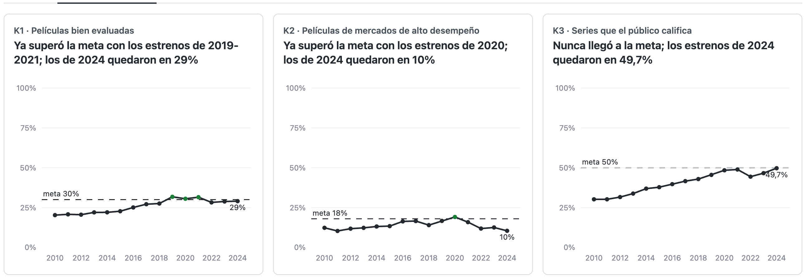
Cada hallazgo responde las cuatro preguntas del storytelling del caso (qué ocurre, por qué, qué evidencia lo demuestra y qué decidir) y está conectado con un KPI.
Qué ocurre: en Japón (51%), Corea del Sur (47%) y México (43%) la proporción de películas bien evaluadas duplica la de EE.UU. (23%), que aporta el 50% de las películas del catálogo. Los tres mercados suman solo 13,5% (K2). Evidencia: la ventaja se mantiene con tres métodos (comparación directa, mismo género y año, y promedio bayesiano con controles; Sección 4.11 del notebook) y con bases de 236 a 871 películas calificadas por país. Por qué ocurre: lo que se exporta de estos mercados es una selección de su producción, mientras que de EE.UU. se adquiere volumen. Qué decidir: subir K2 a 18% con una cuota de adquisición, con un piloto que verifique que las nuevas compras mantienen la calidad (ver riesgos).
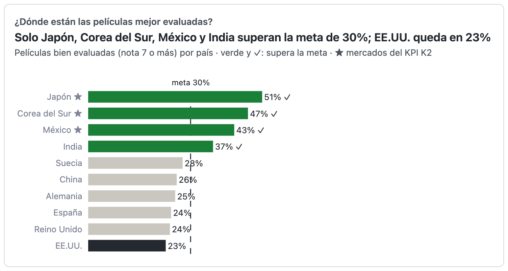
Qué ocurre: 9 de 18 géneros superan el 30% de películas bien evaluadas. Documental (64%), Animación (53%) y Música (53%) lideran; Terror (7%), Suspenso (13%) y Misterio (19%) quedan muy por debajo. Qué decidir: la meta de K1 no se alcanza solo con mercados. Si K2 llega a 18% con las tasas actuales, K1 sube cerca de 1,2 pp; los otros 3 pp requieren cambiar la mezcla de géneros de las nuevas adquisiciones. Animación es el género más completo: en el catálogo cumple los tres KPIs.
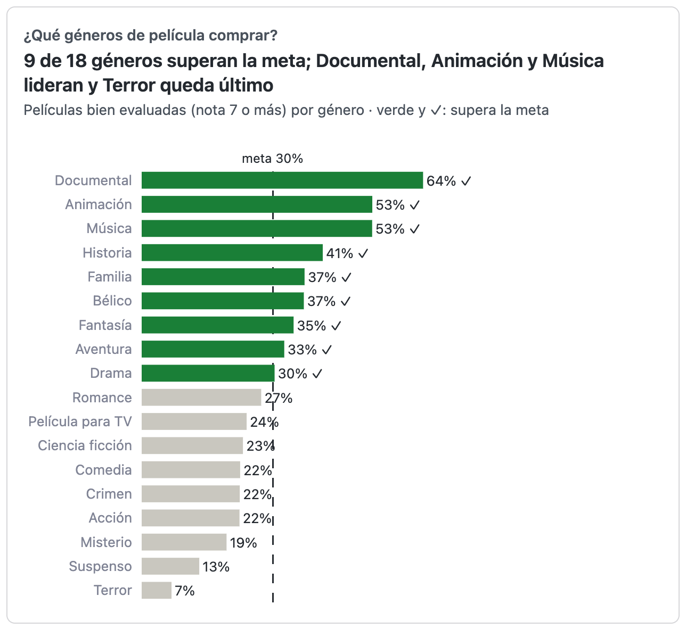
Qué ocurre: solo 38,4% de las series tiene al menos 10 votos, frente a 88,6% de las películas, aunque la participación sube año a año (30% en 2010, 49,7% en 2024). La brecha se concentra en algunos géneros: Conversación (14%), Reality (23%) y Documental (28%) quedan muy abajo, mientras Fantasía y Ciencia ficción llegan a 69%; 8 de 16 géneros cumplen la meta. Por qué importa: sin votos no se puede saber si una serie gusta ni si conviene renovarla. Evidencia: 4.501 series tienen público (popularidad sobre la típica de las series) y aún no llegan a 10 votos; cerrar la brecha de K3 equivale a unas 1.850 series más con votos suficientes. Qué decidir: Producto incorpora una solicitud de calificación al terminar un episodio y Marketing destaca las series con público sin votos, empezando por Conversación, Reality y Documental.
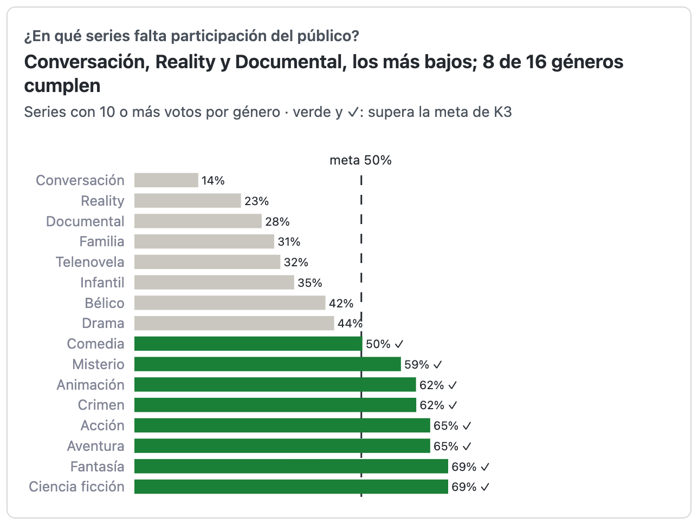
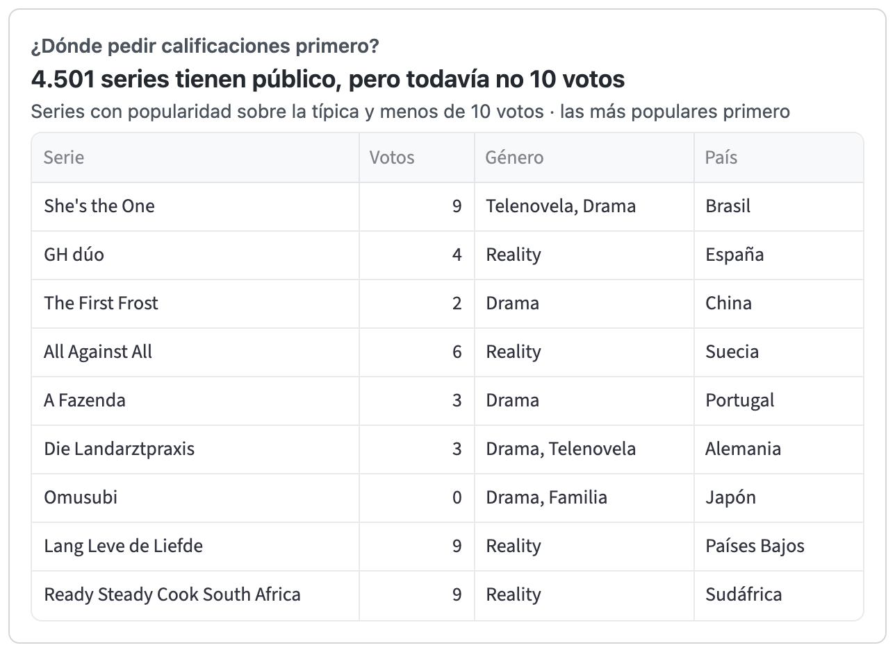
Qué ocurre: la proporción de películas que recauda en taquilla al menos su presupuesto sube con la nota: 42% con nota bajo 5, 62% entre 6 y 7, y 89% con 8 o más. Las bien evaluadas lo recuperan el 77% de las veces, frente a 58% de las demás. Las películas de Japón, Corea del Sur y México lo recuperan el 70% de las veces, frente a 66% en EE.UU. Advertencia: solo 21,7% de las películas tiene datos financieros válidos, sobre todo grandes estudios, y solo 179 son de los tres mercados de K2: no afirmamos que rindan más, sino que la cuota de K2 no sacrifica rentabilidad. Por eso la rentabilidad es evidencia y no un KPI. Qué decidir: usar K1 y K2 como criterio antes de aprobar inversiones altas, y completar los datos financieros en cada renovación para que la evidencia represente a todo el catálogo.
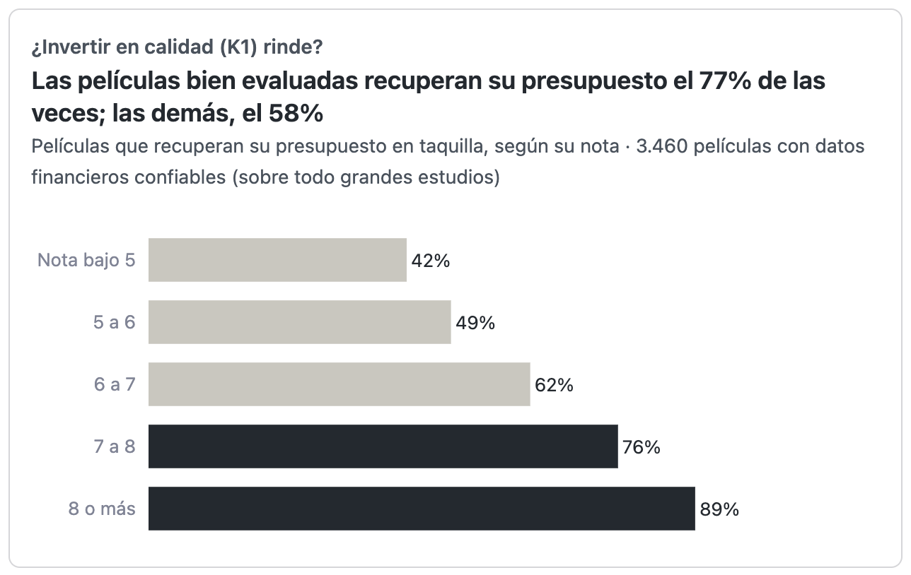
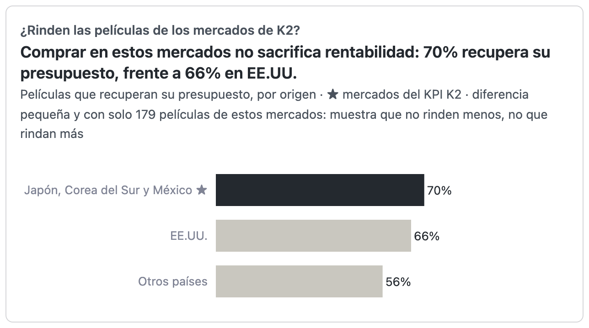
Además, el catálogo es una muestra curada (1.000 películas y 1.000 series por año de estreno), por lo que no permite medir crecimiento. Por eso las trayectorias se leen por cohorte de estreno, no como evolución del catálogo.
La versión EP4 tenía un propósito claro (vista por perfil para Directorio, Marketing y Data & Analytics), un hallazgo central robusto (mercados) y reglas de calidad de datos bien fundamentadas. Pero no permitía responder la pregunta que el Directorio necesita: ¿vamos bien o mal, y quién debe actuar?
| Aspecto | Fortalezas de EP4 (se mantienen) | Limitaciones y riesgos detectados en EP4 |
|---|---|---|
| KPIs | Cálculos correctos y coherentes con el notebook | Métricas presentadas como KPIs: sin meta, plazo, responsable ni decisión. "Japón" o "Título más popular" no son indicadores. Riesgo: el Directorio no sabe si una cifra es buena o mala |
| Audiencia | Tres perfiles con vistas explicativas y exploratorias | Faltaba el dashboard analítico para la Gerencia de Contenidos que pide el caso; las preguntas de directores y actores no se respondían |
| Análisis | Reglas contra sesgos (10+ votos, comparación dentro de formato, finanzas válidas, mínimos por categoría) | Rankings sin referencia: no se sabía qué valor era "suficiente". No se veía si el catálogo se acercaba o alejaba de un objetivo |
| Diseño | Títulos que dicen la conclusión; gris para el contexto y color para el mensaje | Texto secundario con contraste 3,6:1 (bajo AA); tipografía monoespaciada; color primario rojo que compite con el rojo semántico; formatos distinguidos solo por color |
| Interacción | Filtros que recalculan títulos; el filtro de país destaca en vez de recortar | Los filtros no tenían un objetivo contra el cual comparar el segmento; no había leyenda de cómo leer los indicadores |
| Consistencia | Misma limpieza en notebook y dashboard (copiada) | Lógica duplicada en dos lugares (riesgo de "múltiples versiones de un indicador"); el naranjo de las series era distinto en el notebook y en el dashboard |
Cada gráfico se eligió según el tipo de variable, la pregunta, la audiencia y el riesgo de distorsión, y se compararon alternativas. Seguimos los principios de Storytelling with Data (Knaflic): barras para comparar magnitudes, siempre desde cero; líneas solo para el tiempo; dispersión solo para relaciones; nada en 3D, sin tortas ni doble eje. Todo porcentaje se muestra en la misma escala de 0 a 100% en todas las pantallas, como recomiendan las Human Interface Guidelines de Apple para rangos cuyos límites tienen sentido (su ejemplo es la carga de una batería, de 0% a 100%).
| Representación | Variables y escala | Objetivo y audiencia | Por qué esta | Alternativas descartadas | Cuidado contra distorsión |
|---|---|---|---|---|---|
| Tarjeta KPI con gráfico de bala | Proporción (0-100%) frente a meta y umbral | ¿Cumplimos? · Directorio y todas las gerencias | Muestra valor, meta, brecha y rangos cualitativos en poco espacio (S. Few) | Velocímetro (ángulos difíciles de comparar, mucho espacio); semáforo solo de color (no muestra brecha ni es accesible) | Escala desde 0; meta como marca vertical; estado con ícono + texto |
| Barras horizontales ordenadas con línea de meta (país, género, K3 por género) | Categórica nominal (16-18 categorías, nombres largos) × proporción | Ranking contra la meta de K1 o K3 · Contenidos, Directorio y Marketing | La longitud es el canal más preciso para comparar magnitudes; horizontal = etiquetas legibles | Mapa coroplético (el área del país distorsiona: EE.UU. domina visualmente; no ordena); torta (no compara 16 partes); barras verticales (etiquetas rotadas) | Eje en cero; mínimo de 200 películas por país; n en el tooltip |
| Línea de KPI por año con meta | Año de estreno (temporal) × proporción | ¿La meta es realista? ¿Hacia dónde vamos? · Directorio | La línea muestra cambio y pendiente en el tiempo | Barras por año (sugieren totales, más tinta); área (sugiere acumulación) | Misma escala de 0 a 100% en las tres trayectorias y en todo el tablero; valor del último año escrito; puntos verdes en los años que superaron la meta |
| Columnas por tramo de nota (rentabilidad) | Nota agrupada en 5 tramos ordenados × proporción que recupera su presupuesto | ¿Invertir en calidad rinde? · Directorio | Tramos con significado que entiende una audiencia no técnica; la subida de izquierda a derecha es el mensaje | Dispersión ROI-nota (cola larga ilegible, requiere formación estadística); histograma de ROI (no responde la pregunta) | Escala de 0 a 100%; tramos cerrados; cobertura de 21,7% escrita en la tarjeta |
| Tablas de series sin votos y de películas a destacar | Títulos con votos, popularidad y nota | ¿Dónde pedir calificaciones y qué promover? · Marketing | La tarea es buscar nombres y valores exactos, no comparar magnitudes | Dispersión (útil para explorar, no para elegir títulos) | Películas con al menos 200 votos para no promover calificaciones frágiles |
| Dispersión popularidad-calificación (log) | Dos variables continuas; popularidad muy asimétrica | ¿Hay relación? · Data & Analytics | Muestra forma y dispersión de la relación, no solo un coeficiente | Solo el coeficiente (oculta la forma); escala lineal (aplasta el 95% de los puntos) | Escala log rotulada; muestra aleatoria fija; forma + color por formato |
| Barras agrupadas por idioma y formato | Conteo por idioma (categórica) × formato | Composición del catálogo · Data & Analytics | Compara longitudes con la misma base; se lee el idioma y el formato a la vez | Treemap (lo pedía el caso; obliga a comparar áreas, que se leen peor que longitudes) | Barras desde cero; valor escrito en cada barra |
| Barras apiladas por año | Conteo por año y formato | ¿Creció el catálogo? · Data & Analytics | Muestra el total y la composición de cada año; revela que el catálogo trae siempre 1.000 + 1.000 títulos | Áreas apiladas (lo pedía el caso; sugieren continuidad y acumulación, y las capas superiores no parten de una base común) | Barras desde cero; colores de formato |
| Barras de directores y actores | Conteo por persona | Pregunta de Producción del caso · Contenidos | Ranking simple de frecuencias | Nube de palabras (no permite comparar) | Formato predominante escrito en la barra; nota sobre series sin director |
El caso pide barras, líneas, áreas, dispersión, treemap y KPIs. Barras, líneas, dispersión y KPIs están presentes. El treemap y las áreas estuvieron en la versión EP4 y se reemplazaron de forma deliberada por barras: comparar áreas es menos preciso que comparar longitudes, y la regla de diseño del tablero es usar barras para comparar magnitudes. Los mapas se descartaron por la distorsión de área descrita arriba y porque el hallazgo es un ranking, no un patrón geográfico.
| Criterio | Antes (EP4) | Después (EP5) | Referencia |
|---|---|---|---|
| Contraste del texto secundario | #8a8878 sobre blanco: 3,58:1 (no cumple AA) | #4a525c: 7,92:1 (cumple AA y el 7:1 que Apple recomienda para texto chico) | WCAG 1.4.3; Apple HIG |
| Contraste de los estados | No existían | Verde 5,08:1 · ámbar 4,87:1 · rojo 5,36:1 (AA) | WCAG 1.4.3 |
| Uso del color | Película/serie y "destacado" solo por color | Ícono + texto + color en estados; ✓ en las barras que superan la meta; rayado en las series y línea punteada con cuadrados; un color, un significado en todas las pantallas | WCAG 1.4.1 |
| Tipografía | Cifras en monoespaciada; etiquetas de 0,74 rem | Sans serif con números tabulares; etiquetas de 0,85-0,92 rem; ejes de 14 px | Legibilidad |
| Unidades y etiquetas | "Popularidad típica" sin escala; montos sin unidad en algunos ejes | "índice TMDB", "escala 0 a 10", "millones US$", "veces"; coma decimal en todo | Regla de negocio 7 |
| Jerarquía | Dos filas de cifras con el mismo peso, antes de cualquier mensaje; filtros en la esquina superior izquierda | Frase con la conclusión arriba a la izquierda → estado de los KPIs → una tarjeta por pregunta (pregunta, respuesta, gráfico); filtros en un botón | SWD: posición y Big Idea; lectura en "Z" |
| Lectura de un vistazo | Páginas de hasta 5.200 px que exigían scroll | Las 15 pestañas caben en una pantalla de 1440 × 900 (medido) | SWD: carga cognitiva |
| Lenguaje y cifras | "pp", "cohorte", "mediana", "n=", filas de métricas sin mensaje | Lenguaje llano ("puntos", "estrenos de cada año"); tarjeta KPI con valor, estado y meta; cifras redondeadas y coherentes | SWD: eliminar el desorden |
| Escalas | Cada gráfico con su propia escala | Todo porcentaje de 0 a 100%; películas y series en la misma escala de popularidad | Consistencia; Apple HIG, Charts |
| Modo oscuro | Solo modo claro, forzado | Sigue la apariencia del sistema; paleta oscura con contraste de 5,6:1 a 16:1 | Apple HIG, Dark Mode |
| Lectores de pantalla | Gráficos sin descripción | Resumen en texto de cada gráfico: tipo, escala y valores | Apple HIG, Charts; WCAG 1.1.1 |
| Controles | Botones de opción para elegir vista y orden | Controles segmentados con estado visible y descripción emergente; botón "Quitar filtros" a la vista | Apple HIG, Segmented controls, Feedback |
| Preferencias del sistema | No se consideraban | Respeta "reducir movimiento" y "aumentar contraste"; fuente del sistema | Apple HIG, Accessibility, Typography |
| Color decorativo | Rojo de Streamlit en pestañas, radio y slider | Primario neutro #24292f: el rojo solo significa "no cumple" | Color con significado |
| Orientación del usuario | Filtros activos sin resumen junto al contenido | Línea de alcance bajo la conclusión, botón "Filtros (n)" y leyenda de estados bajo los KPIs | Heurísticas de Nielsen |
Se implementaron 43 mejoras. El registro completo, con problema, mejora, fundamento, resultado esperado y archivo de
evidencia, está en entregables/evidencias/registro_cambios.md. Las principales:
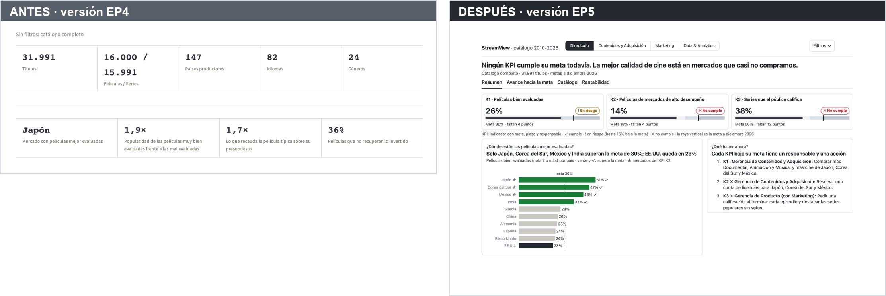
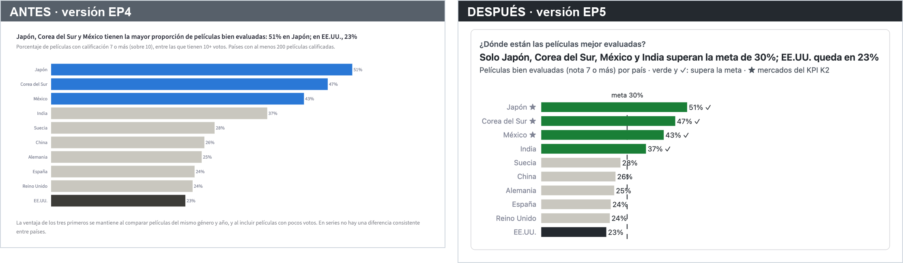
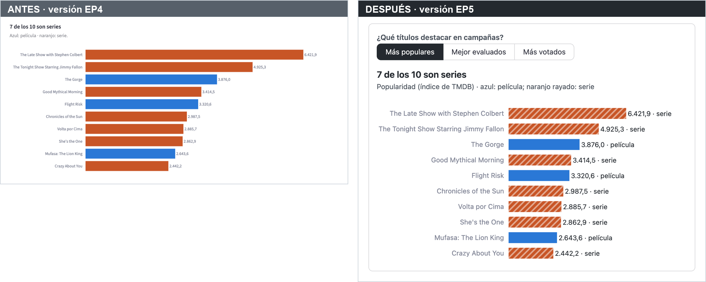
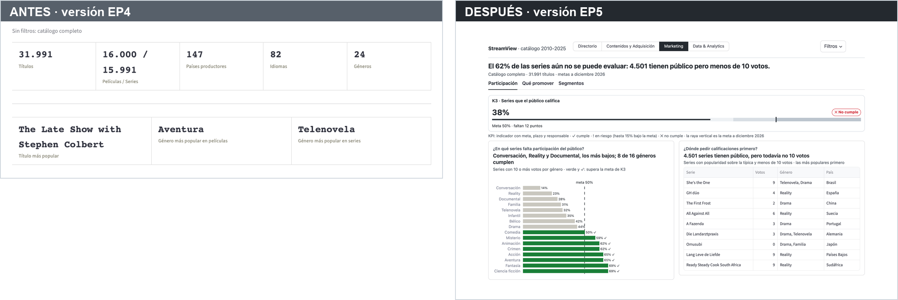
| # | Problema | Mejora | Fundamento |
|---|---|---|---|
| 7 | Faltaba el dashboard analítico de Contenidos | Perfil Contenidos y Adquisición (Mercados, Géneros, Directores y actores) | Diseño por audiencia; requisito del caso |
| 9 | No había vista para decidir qué géneros adquirir | K1 por género contra la meta, con estado por barra | Comparación contra objetivo |
| 10 | No se sabía si las metas eran realistas | Trayectoria de cada KPI por año, con meta y alerta | Línea para cambio temporal |
| 11 | Preguntas del caso sin responder (directores, actores) | Sección Directores y actores | Cobertura de las preguntas de negocio |
| 12 | Marketing sin lista accionable | Tablas de series con público sin votos (palanca de K3) y de películas bien evaluadas de los mercados de K2 | Tabla para búsqueda de valores exactos |
| 6 | Lógica duplicada entre notebook y dashboard | Módulo único dashboard/streamview + prueba automática | Una sola fuente de verdad |
| 15-21 | Contraste, tipografía, color exclusivo, unidades, rótulos superpuestos | Ver sección 8 | WCAG 2.1 AA |
| 23-32 | Páginas largas, filtros arriba a la izquierda, sin conclusión explícita, varios gráficos por sección, jerga, treemap y áreas, escalas y colores distintos entre pantallas | Rediseño con Storytelling with Data: una pantalla por pestaña, frase con la conclusión arriba a la izquierda, una tarjeta por pregunta, lenguaje llano, solo barras para magnitudes, escalas de 0 a 100% y un significado por color | SWD caps. 1 a 5 y reglas de diseño del equipo |
| 33-42 | Solo modo claro, botones de opción, gráficos sin descripción para lectores de pantalla, distinciones solo por color, "nosotros" en los textos | Revisión con las Human Interface Guidelines de Apple: modo claro u oscuro según el sistema, controles segmentados, resumen accesible de cada gráfico, ✓ y rayado además del color, textos sin "nosotros" y estados vacíos con siguiente paso | Apple HIG: Dark Mode, Charts, Color, Segmented controls, Writing, Accessibility |
| 43 | Seis KPIs dispersaban la atención; tres dependían de datos parciales o no correspondían a decisiones centrales | Foco en K1, K2 y K3; pestaña Rentabilidad como evidencia de K1 y K2; Marketing centrado en la participación (K3) | SWD: pocos indicadores, cada uno ligado a una decisión; Apple HIG: keep focused |
Comprobamos que los KPIs, filtros, interacciones y navegación entreguen información consistente:
python dashboard/tests/test_kpis.py): 5 pruebas aprobadas. Verifican los 31.991 títulos,
que cada línea base coincida con los datos, la coherencia entre meta y alerta, los estados y que los filtros recalculen.entregables/evidencias/escenarios/). Género Terror: K1 cae a 6,8% (no cumple). Documental: K1
64,3% (cumple) y K2 4,0% (no cumple). Japón: K1 51,0% y K3 63,3% cumplen, y K2 muestra "sin datos" con el motivo.
Series en coreano: K3 44,4% (en riesgo) y 414 series con público sin votos. Animación: cumple los tres KPIs. Los títulos, estados y decisiones cambian con el segmento.| Limitación o sesgo | Consecuencia en la interpretación | Mitigación aplicada | Pendiente |
|---|---|---|---|
| Sin datos de consumo (reproducciones, suscripciones, usuarios) | No se puede medir retención; K3 es una aproximación de engagement con datos de TMDB, no de la plataforma | Rotulado explícito en el dashboard y el informe | KPI de retención con datos propios (mejora M5) |
| Sesgo de selección en la calificación | K1 describe solo películas con 10+ votos; en series, solo el 38% tiene votos suficientes | Base n visible en cada tarjeta; K3 mide justamente esa cobertura | — |
| Causalidad no demostrada en mercados | Que Japón tenga mejores calificaciones no garantiza que comprar más películas japonesas suba K1: lo que se exporta ya es una selección | Hallazgo validado con 3 métodos y controles por género y año | Piloto de adquisición con seguimiento por cohorte (R1) |
| Sesgo financiero | La evidencia de rentabilidad describe sobre todo a grandes estudios (21,7% de cobertura) | No se usa como KPI; aviso de cobertura en cada tarjeta de rentabilidad | Completar datos (R3) |
| Popularidad como foto del momento | El índice TMDB favorece lo reciente o en tendencia; las listas de Marketing pueden variar entre extracciones | Mediana; referencia fija por formato; comparación dentro de formato | Promediar varias extracciones |
| Catálogo curado (1.000 + 1.000 por año) y fecha de incorporación igual al estreno | No se puede medir crecimiento ni "incorporaciones por año" del caso | Trayectorias por cohorte de estreno, rotuladas como tales | Fecha real de incorporación (M8) |
| Metas definidas por el equipo | Podrían estar mal calibradas para el negocio real | Basadas en línea base y cohortes que ya las alcanzaron; justificación visible | Validarlas con cada responsable (M1) |
| Umbral de alerta uniforme (15%) | K2 varía más que K1 entre años (de 19% a 10%); el mismo umbral puede generar falsas alarmas | Regla única y explicable | Umbral según volatilidad (M6) |
| Clasificación etaria inutilizable | La columna rating trae la calificación numérica; los KPIs de clasificación del caso no son calculables | Documentado en la Sección 2.2 del notebook | Solicitar el dato a la fuente |
| Coproducciones | Un título suma en cada país; las participaciones por país suman más de 100% | Rotulado en cada gráfico de países | — |
| Escala común de 0 a 100% | Cambios de pocos puntos (K1 pasa de 20% a 32%) se ven más planos que con un eje ajustado al dato | Es una decisión deliberada para no exagerar diferencias; el título de cada tarjeta escribe la cifra y los años sobre la meta van en verde | — |
| Gris de contexto (#c9c7bf, 1,69:1) | Las barras de contexto tienen bajo contraste con el fondo | El valor está escrito en cada barra, así que el dato no depende del gris | Borde más oscuro en las barras grises |
| Despliegue local | El dashboard corre localmente, sin control de acceso por perfil | Instalación reproducible documentada | Despliegue corporativo (M4) |
Criterio: impacto = cuánto mejora una decisión de negocio o cierra una brecha de los KPIs; esfuerzo = tiempo y datos nuevos que requiere. M1 va primero porque todas las decisiones dependen de que las metas sean aceptadas.
Conclusión. La solución optimizada pasa de describir el catálogo a medir el avance hacia objetivos de negocio. Hoy ningún KPI cumple su meta (K1 en riesgo; K2 y K3 no cumplen), pero K1 y K2 ya alcanzaron su meta en alguna cohorte y K3 llega a 49,7% en los estrenos de 2024: el problema no es de capacidad, sino de dónde se adquiere y de pedir la participación del público. El dashboard entrega a cada gerencia su KPI, su brecha y su lista de acciones, con filtros para encontrar los segmentos que ya cumplen.
| Recomendación | Hallazgo que la sustenta | KPI | Decisión concreta y responsable | Impacto esperado | Cómo se verifica |
|---|---|---|---|---|---|
| R1 Reorientar la adquisición de cine | H1, H2: Japón, Corea del Sur y México duplican la calidad de EE.UU.; 9 géneros ya cumplen la meta | K1 (25,8% → 30%) y K2 (13,5% → 18%) | Contenidos y Adquisición: cuota de licencias para los 3 mercados; priorizar Animación, Documental y Música; no renovar películas bajo 5,0 | K2 en meta aporta ~1,2 pp a K1; la mezcla de géneros aporta el resto (~3 pp ≈ 600 películas bien evaluadas) | Trimestral en el dashboard; comparar la calidad de las adquisiciones nuevas contra la línea base (piloto por cohorte) |
| R2 Pedir calificación y destacar series sin votos | H3: solo 38% de las series tiene 10+ votos; 4.501 series con público sin votos; Conversación, Reality y Documental bajo 30% | K3 (38,4% → 50%) | Producto: solicitud de calificación al terminar un episodio. Marketing: destacar las series de la lista del dashboard, empezando por esos géneros | ~1.850 series más con votos suficientes, lo que mejora las decisiones de renovación | K3 trimestral; proporción de series de la lista que pasan a 10+ votos |
| R3 Invertir con evidencia y completar los datos | H4: las bien evaluadas recuperan su presupuesto 77% frente a 58%; los mercados de K2, 70% frente a 66% en EE.UU.; solo 21,7% con datos | K1 y K2 como criterio de inversión | Gerencia General: exigir nota y mercado del segmento antes de aprobar presupuestos altos. Data & Analytics: pedir presupuesto e ingresos en cada renovación | Menos películas que no recuperan la inversión; evidencia financiera representativa | Tasa de recuperación de las compras nuevas por cohorte; cobertura financiera trimestral |
Con esto, la solución responde las preguntas estratégicas del caso: qué contenido priorizar (Animación, Documental y Música en cine; series con buena calificación), qué países representan oportunidades (Japón, Corea del Sur y México) y qué promover (series con público que aún no tienen votos y películas bien evaluadas de esos tres mercados). Además, deja a la vista con qué confianza se puede afirmar cada cosa.
El repositorio contiene todo lo necesario para reproducir la solución sin información externa:
| Elemento | Ubicación y uso |
|---|---|
| Datos | data/: los dos CSV oficiales, sin modificar |
| Limpieza y KPIs (fuente única) | dashboard/streamview/datos.py, dashboard/streamview/kpis.py |
| Dashboard | pip install -r dashboard/requirements.txt y streamlit run dashboard/app.py |
| Notebook | notebooks/analisis_exploratorio.ipynb (auditoría, métricas, KPIs y 17 visualizaciones en images/) |
| Verificación técnica | python dashboard/tests/test_kpis.py |
| Evidencias antes/después | entregables/evidencias/: antes/, despues/, comparativas/, escenarios/, figuras/ y registro_cambios.md. Se regeneran con los scripts de entregables/fuente/ |
| Este informe | entregables/fuente/informe_ep5.html; PDF con python entregables/fuente/generar_pdf.py |
Entorno probado: Python 3.9.6, streamlit 1.50.0, pandas 2.3.3, plotly 7.1.0.